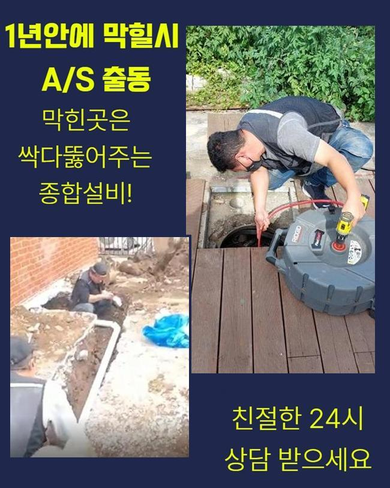
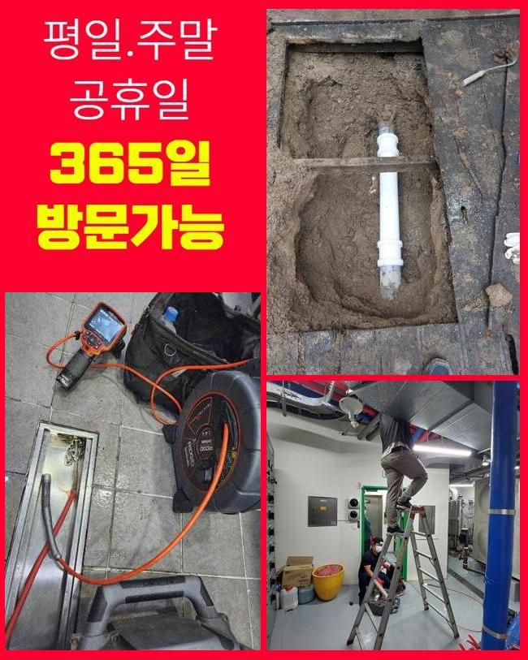
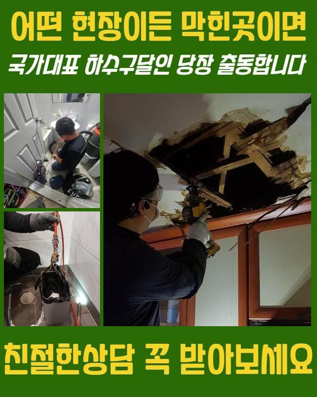
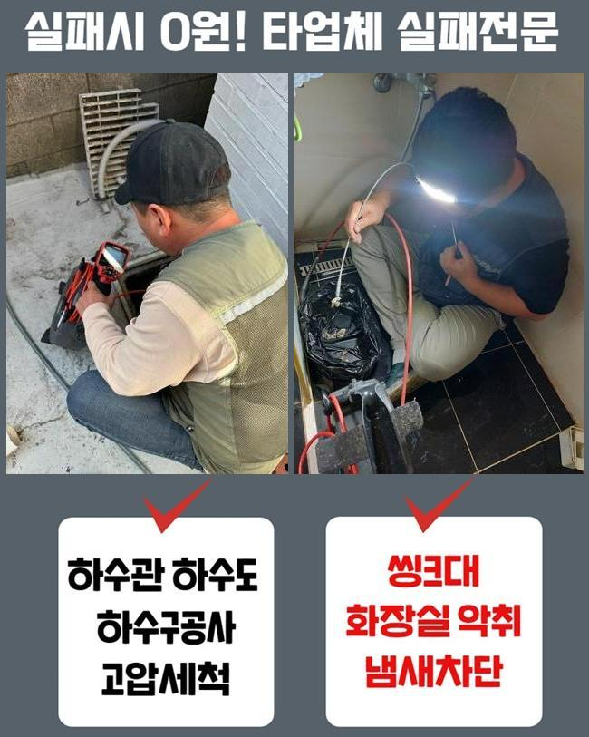
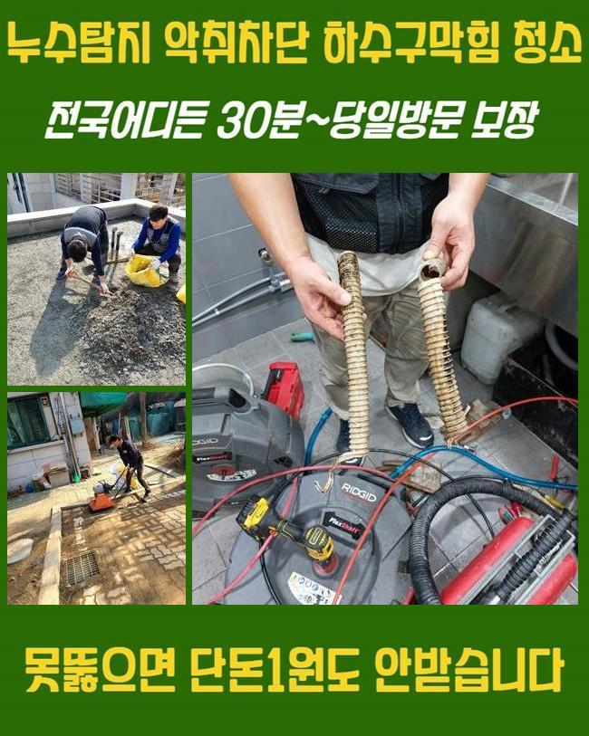
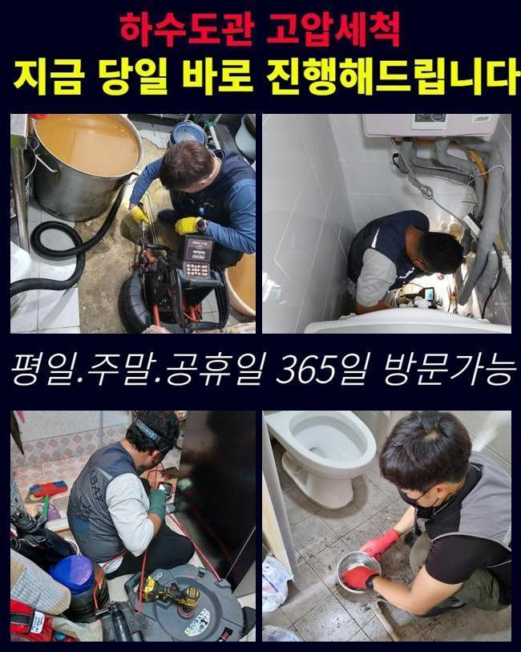
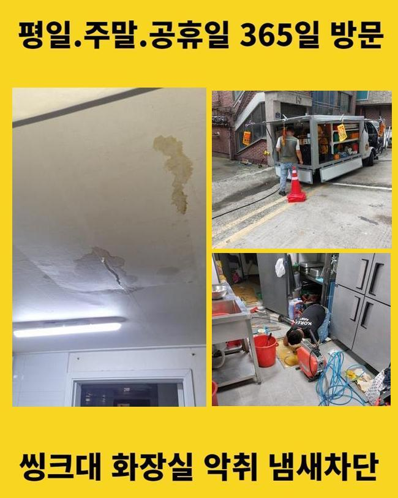

🏠 송파 강동 싱크대배수관막힘 김포시 하수관고압세척 배관설비공사
용인 싱크대막힘 전문 시공 후기

📋 작업 개요
- 위치: 용인
- 서비스 유형: 싱크대막힘, 변기막힘, 배관막힘, 역류해결, 배관청소, 고압세척, 설비공사, 배관보수
- 작업 일시: 2024. 11. 21. 21:04
- 업체명: 하수구수사대 (010-5615-2118)
🔍 문제 상황
송파 강동 싱크대배수관막힘 김포시 하수관고압세척 배관설비공사
어떤 시설이든 하수관이 존재해 다양한 조건에서 언제나 활용 중입니다
반면에 여러장소에서 관리소홀 오염물 유입 등 복합적인 이유로 하수관 막힘을 경험하고 있습니다
지금과 같은 상태라면 발벗고 나서서 주방설비 세면기 양변기 등 문제 현상이 나타난 부위를 찾아서 해결해야해요
시간이 지나갈수록 나쁜 상황들을 발생시키게 됩니다
하지만 어떤 현장에서는 각 호실의 상황이 아닌 많은 사람이 같이 쓰고있는 관로에서 일어난 문제점일수도 있습니다
이것은 유발된 증상만 보고는 추정할 수 없는 부분이라서 문제장소로 가서 다양한 측면을 정밀하게 조사해야합니다
금번에 시공을 문의한 곳은 상업시설로 화장실의 하수가 흘러가지 않고 역행한다고 이야기하셔서 장애가 생긴 것을 인지했어요
여러 장소 중에서도 상가매장은 서로 같이 사용하는 경우가 많으므로 어느 요인으로 인해 발생했는지 즉시 조사하는 것이 바람직합니다
장시간 귀찮은 상황들이 해결되지 않는다면 매장 경영에 차질이 되기 때문이죠
이에 따라 문제장소로 가서 어느 곳에 이상이 있는지 조사해봤습니다
화장실 내부로 들어가 물을 내려보니 물 빠짐이 잘 이뤄지지 않고 역류상황이 발생했어요
게다가 악취마저 동반되어 유발 인자를 빠르게 치울 필요가 있었어요
각 지점에서 흘려보내는 더러운 물은 최종단계에서 큰 관로로 집결됩니다

🔎 원인 분석
💡 전문가 진단: 정밀 진단 장비를 사용하여 슬러지의 고착 여부를 판명하고 타격/세척 작업을 실시했습니다.
중심 배관이라고 말하는데 해당 메인관에서는 각종 문제점들이 흔하게 유발될 수 있어요
이에 따라 본인 가게에 전조 증상이 없다하더라도 역류하는 것을 겪게 되는 것입니다
역류현상으로 인한 악취 또한 수반되고 있어서 빠르게 장치를 이용해 고쳐 드리기로 결정했어요
매일같이 늘 쓰이고 있는 배수관이지만 예상외로 많은 이들이 유지보수를 하지 않으시더라구요
신경을 덜 써도 눈에 띄는 문제점이 유발되지 않는다는 생각으로 대충 판단하는 사람이 많죠
하지만 오물들이 누적되면서 언제쯤 심한 막힘이 나타날지 그 누구도 추측할 수 없어요
그러므로 정기적으로 청소를 하는게 상황이 나빠지는 것을 저지할 수 있어요
마개를 열고 나니 파이프 입구쪽부터 각종 오물들이 넘칠 듯 가득했어요
물이 흐를 곳이 없어서 이런 문제가 발생한 것이었어요
이에 따라 이물을 없애려고 석션 장치를 사용했어요
찌꺼기를 흡수시키는 장비로 면밀하게 입구쪽에 틈새가 만들어졌습니다
그 다음에는 유발 인자를 탐지하기 위해 속에 내시경기계를 삽입하였습니다
기다란 관이 부착된 내시경장치는 더 깊은 지점까지 조사하기 편리합니다
확인 결과 대량의 이물질이 입구쪽부터 엄청 들어있던 것처럼 속안에도 많이 쌓인 것을 확인했습니다

🔧 작업 과정
내시경 카메라장치로 확인해보니 대량의 오염물이 있었으며 더 깊이 이동하면 굳어진 석회가 위치하고 있었습니다
석회라는 물질은 각종 물질이 하수관로에서 계속해서 누적되며 강하게 적층된 것을 말합니다
배수구 막힘의 발단은 퇴적된 석회였으며 부피가 크고 강하게 굳어진 상태라 제거가 어려운 상황이었죠
이처럼 딱딱한 정도의 석회 침전물은 흡입기만으로 치우기 어렵습니다
방심하면 기구가 파손되어버리는 결과를 만들 수도 있게 됩니다
이에 따라 플렉스 샤프트 기구를 이용해 조그마한 조각으로 석회 덩어리를 세심하게 부수기로 결심했습니다
샤프트기구의 압력을 사용해 석회 퇴적물을 분해한 후 석션장치로 제거해주었습니다
게다가 안쪽에도 오염물이 퇴적되어 있었기 때문에 온수 고압 세정을 하기로 확정하였습니다
온수 고압 클리닝은 가정 내부에서 보단 관로와 정화탱크를 세척할 때 흔히 이용중인 절차입니다
막힌 정도에 따라 어느 도구와 방안을 사용할지 알맞게 판단해야해서 원인 파악을 서둘러 결정하는 전문업체와 함께하는 게 바람직합니다
아주 센 물줄기를 이용해 가열된 물을 내부 깊숙이까지 쏴주었습니다
이물들이 흘러나갈 수 있게 씻어내는 시공입니다
높은 물줄기 활용하다보니 부수적인 갈아내는 일을 하지 않고도 깨끗하게 속에 존재하던 오염물을 제거한 것을 관찰할 수 있었습니다
고압 세척 작업을 때때로 간단히 판단하는 사람도 있어요
온수를 부으면 충분할거라는 생각에 긴 관을 집어넣는 사람이 있기도 합니다
반면에 수압을 상황에 맞게 조율하는 건 힘든 일입니다
잘못하면 배수관에 손상을 줄 수도 있어서 작업할 때 철저하게 강도를 조절 해야 합니다
내시경 카메라장비로 안쪽의 여건을 확인해가며 철저히 강한 압력의 물을 뿜어내 주었습니다
남겨진 조각이 없게 확인해나가면서 청소한 결과 속안에 쌓여 있었던 슬러지와 오염물 석회 축적물이 사라진 것을 관찰할 수 있었습니다
이 과정의 경우 조건에 따라 걸리는 시간에 차이가 있기도 합니다
이번 작업의 경우 대략 30분의 시간이 소모되었으며 찌꺼기가 깔끔히 씻겨진 걸 알 수 있었죠
하수관 속안의 조건이 깨끗해지면서 하수가 제대로 빠지는지 파악하기 위해 물흐름 테스트를 실시했습니다
변기내부의 물을 배출하거나 세면볼에 수도를 사용해 보면서 또 다시 물 고임이 유발되지는 않는지 파악해보았습니다


✅ 작업 완료
확인해보니 하수가 원활히 배수되기 시작했음과 동시에 배수불량 현상도 없어진 것을 깨달았어요
상가 전반에 상황이 해결되면서 악취마저 없어진 것을 느끼게 되었습니다
보통 주택내에서도 종종 생길 수 있는 케이스입니다
배수로는 세면대와 화장실 그리고 조리실 등 여러 장소에 존재하니까요
인터넷에 있는 정보로 홀로 처리해보려는 사람이 있지만 그럴 때 아예 고장나는 경우를 가져올 수 있다는 걸 알 수 있어야 해요
그러므로 스스로 분석하고 무언가 하기보다는 전문적인 기기를 보유한 전문기사에게 의뢰해야 합니다




⚠️ 주방 싱크대 배관 막힘 예방 수칙
- ✅ 기름기가 묻은 식기나 프라이팬은 설거지 전 키친타올로 반드시 기름때를 닦아내세요.
- ✅ 주기적으로 싱크대 개수대에 뜨거운 물을 가득 받아 한 번에 내려 배관 내부 기름을 씻어내세요.
- ✅ 배수구 거름망을 미세한 필터로 사용하시고 음식물 찌꺼기가 틈으로 새어 들지 않게 관리하세요.
- ✅ 베이킹소다와 식초를 뜨거운 물과 함께 일주일에 한 번씩 부어주면 배관 살균과 막힘 예방에 좋습니다.
💡 핵심 정리
- 확실한 장비 작업(내시경 점검 및 샤프트 스케일링)으로 원인을 뿌리 뽑습니다.
- 작업 후 1년 이내에 동일한 부위 재발 시 100% 무상 A/S 서비스를 보장합니다.
- 서울 · 경기 · 인천 전 지역에 24시간 언제든 긴급 출동할 수 있도록 항시 대기 중입니다.
❓ 자주 묻는 질문 (FAQ)
🚨 용인 싱크대막힘 문제로 고민이신가요?
정확한 원인 진단과 확실한 시공으로 재발 없는 해결을 약속드립니다.
24시간 긴급 출동 | 서울 · 경기 · 인천 전지역 | 1년 내 재발 시 무상 A/S